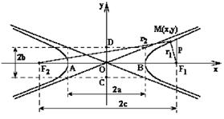

Гипербола

Гипербола – геометрическое место всех точек , для которых абсолютная величина
разности расстояний до двух заданных точек и
(называемых фокусами
гиперболы) постоянна и равна  .
.
.и
, .
Каноническое
уравнение гиперболы
-
каноническое уравнение гиперболы,
точка  - центр;
точки
- центр;
точки  и
и  -
вершины;
-
вершины;
- центр;
точки и -
вершины;точки и - фокусы;
- фокусное расстояние;
- действительная ось
гиперболы;
- мнимая ось
гиперболы; ;
Эксцентриситет
гиперболы
,
- эксцентриситет;
Уравнение
директрисы гиперболы
-
уравнения директрис гиперболы;
Асимптоты
гиперболы
-
асимптоты гиперболы;
Фокальный параметр
гиперболы
-
фокальный параметр гиперболы, если координатные оси совпадают с осями эллипса.
Параметрическое
уравнение одной ветви гиперболы
-
параметрические уравнения одной ветви гиперболы;
Уравнение одной ветви
гиперболы в полярных координатах
-
уравнение одной ветви гиперболы в полярных координатах, связанных с фокусом.